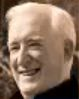

JANUARY 2003
Kenneth Mac Namara (MacNamara) Conference
John Claverhouse, Grand Master of Scottish Templars
University of Aberdeen, Aberdeen |
28 January
John Claverhouse, 1st Viscount Dundee (c.1648 - July 27, 1689) belonged to a family that was descended from King Robert III and had acquired the estate of Claverhouse near Dundee, Scotland. John Claverhouse known as Bonny Dundee was reputed to be Grand master of all Scottish Templars and a Templar cross was found around his neck when he was killed fighting the English at the battle of Killiecrankie in 1689.
Keynote speaker include:

Prof Kenneth Mac Namara (MacNamara), author of Templars in Scotland.
For conference details: andrew.murray@caledonianhistory.com
The final date for bookings is 5 January.
Women's History Scotland Conference
Gender, Politics and Citizenship: Scotland and Beyond
Collins Suite, University of Strathclyde, Glasgow |
26 January
This conference will position Scottish women's and gender history within a broader comparative context. The relaunch of the Scottish Women's History Network as 'Women's History Scotland' offers the opportunity to engage historians of women and gender of all periods and geographies and from a variety of disciplinary backgrounds in a common dialogue within Scotland on issues concerning gender, politics and citizenship from Medieval times to the present.
Speakers include:
Emily Rendall (York) Women's Citizenship: Gender, Politics and Civil Society in Scotland.
Jane Rose (Michigan) 'Fit to Fight but Not to Vote?' Masculinity and Citizenship in Britain, 1832-1918'
Eileen Colvin (Edinburgh) 'We Women have no Fatherland':
Ulrike Meinhof and Emily Wilding Davison
Roundtable on women & politics in modern Scotland
Full programme & booking form overleaf: www.swhn.net.uk
Edinburgh Sir Walter Scott Club
Annual General Meeting
University of Edinburgh English Dept. |
22 January
The Annual Dinner of the Club is held in January each year at which the President delivers a toast to the memory of Sir Walter. Among other meetings there is a Joint Lecture with the University of Edinburgh English Dept. From time to time members also enjoy the privilege of a visit to Abbotsford.
Full details from the Edinburgh Sir Walter Scott Club.
Glasgow Quincentennial Conference
George Buchanan, Poet & Dramatist
Senate Room, University of Glasgow, Glasgow |
16-19 January
George Buchanan is an outstanding Renaissance humanist and neo-Latin poet, and a key figure in the educational world in Scotland, France and Portugal. It will concentrate on his many-sided secular poetry, with its exceptional range and vitality, his Psalm Paraphrases, which were read and studied for centuries afterwards, and his tragedies, through which he was responsible for introducing classical tragedy into France. Papers will be given by a wide variety of British and European scholars, and there will be opportunities for discussion.
There will be an excursion on Sunday, 19 January taking in the castle and the Church of the Holy Rude in Stirling, and the obelisk in celebration of Buchanan at Killearn. On the evening of July 17th there will be a performance in the Glasgow University Chapel of the multi-voice settings of Buchanan’s Psalm Paraphrases by the French Huguenot composer Jean Servin, published in Geneva in 1579 and presented in the same year to King James in a de luxe edition.
Accommodation will be available in the Queen Margaret Residences in the West End of Glasgow.
Further information:
David Green, Department of Classics, University of Glasgow
Glasgow G12 8QQ
Email: david.green@classics.arts.gla.ac.uk
The University of Stirling Centre for Scottish Studies
The Lie of the Land: Scottish Landscape and Culture
|
7-10 January
An international multidisciplinary conference presented by the Centre for Scottish Studies at the University of Stirling.
Speakers include:
James Ascherson, author of Stone Voices: the Search for Scotland
Prof John Buell (Harvard), author of The Environmental Imagination
Prof Brad Duguid (Simon Graser), on John Muir
Prof Ian Macdonald (Dundee), on revisualising the Highlands in art
James Robertson (novelist and poet) on history and place
Provisional programme details are on the conference website at http://www.land.stir.com.uk/
Lie of the Land is presented by The University of Stirling Centre for Scottish Studies via the Departments of English, History, Film & Media, Politics, the Housing Policy Unit of the Department of Applied Social Science and the AHRC Research Centre for Environmental History.